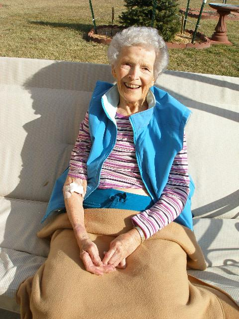
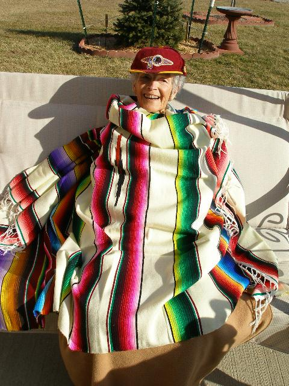

dfellows.rf.gd/images/pics/pics4/mom.html
JANUARY 22, 2009
THE WEATHER WAS NICE TODAY SO I TOOK MOM OUT AFTER LUNCH.
WE GOT ICE CREAM AND A COKE AT DAIRY QUEEN, PARKED AT THE
ENTRANCE TO WALMART AND PEOPLE
WATCHED. SAT IN THE SWING
OUTSIDE THEIR HOUSE FOR A HALF
HOUR AND CALLED FLO, DAWNA AND BEV.
WENT TO SMITH'S FOR EARLY DINNER THEN
BACK TO THE NURSING HOME AT 5:30PM.
MOM'S APPETITE REMAINS VERY STRONG,
BUT SHE IS OVER MEDICATED WHICH CAUSES HER
TO RAMBLE AND HAVE DREAMS WHICH SCARE HER.
 